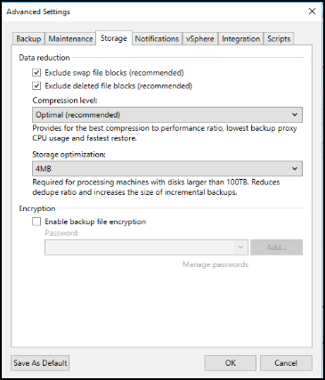
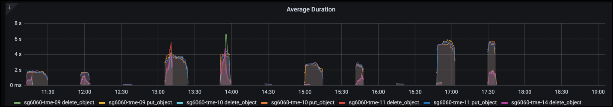
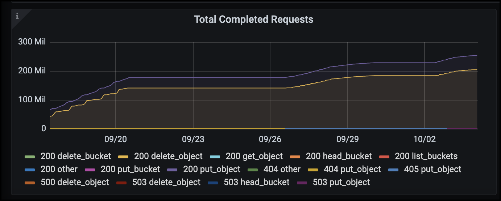

検証済みのサードパーティソリューション
検証済みのサードパーティソリューション
Veeam Backup & Replicationを使用した導入に関するStorageGRIDのベストプラクティス
 変更を提案
変更を提案
このガイドでは、NetApp StorageGRIDの構成と、Veeam Backup & Replicationの一部を中心に説明します。本ドキュメントは、Linuxシステムに精通し、Veeam Backup & Replicationと組み合わせてNetApp StorageGRIDシステムの保守または実装を担当するストレージ管理者およびネットワーク管理者を対象としています。
概要
ストレージ管理者は、可用性、迅速なリカバリの目標を達成し、ニーズに合わせて拡張し、データの長期保存に関するポリシーを自動化するソリューションを使用して、データの増加を管理したいと考えています。これらのソリューションは、損失や悪意のある攻撃からも保護する必要があります。VeeamとNetAppは提携して、オンプレミスのオブジェクトストレージ向けのVeeam Backup & RecoveryとNetApp StorageGRIDを組み合わせたデータ保護解決策を作成しました。
VeeamとNetApp StorageGRIDが連携して動作する使いやすい解決策を提供することで、急速なデータ量の増大や世界的な規制強化のニーズに対応できます。クラウドベースのオブジェクトストレージは、耐障害性、拡張性、運用効率、コスト効率に優れていることで知られており、バックアップのターゲットとして最適です。本ドキュメントでは、Veeam Backup解決策およびStorageGRIDシステムの構成に関するガイダンスと推奨事項を提供します。
Veeamのオブジェクトワークロードによって、小規模オブジェクトのPUT、DELETE、LIST処理が同時に多数作成されます。書き換えや削除の防止を有効にすると、保持期間の設定やバージョンの表示に関する要求がオブジェクトストアに追加されます。バックアップジョブのプロセスでは、日次変更のためにオブジェクトが書き込まれます。その後、新しい書き込みが完了すると、バックアップの保持ポリシーに基づいてオブジェクトが削除されます。バックアップジョブのスケジュールは、ほとんどの場合重複します。その結果、バックアップウィンドウの大部分がオブジェクトストアに50分の50のPUT / DELETEワークロードで構成されます。タスクスロットの設定を使用して同時処理数をVeeamで調整し、バックアップジョブのブロックサイズを増やしてオブジェクトサイズを増やし、複数オブジェクトの削除要求に含まれるオブジェクト数を減らします。 また、ジョブを完了する最大期間を選択することで、解決策のパフォーマンスとコストが最適化されます。
次の製品ドキュメントを参照してください： "Veeam Backup Replication" および "StorageGRID" 始める前に。Veeamには、StorageGRID 解決策 をサイジングする前に使用する必要があるVeeamインフラのサイジングと容量の要件を把握するための計算ツールが用意されています。Veeam Ready ProgramのWebサイトで、Veeamとネットアップによる検証済みの構成について "Veeam Readyのオブジェクト、オブジェクトの変更不可、リポジトリ"。
Veeam構成
推奨バージョン
常に最新の状態に保ち、Veeam Backup & Replication 12システムの最新のホットフィックスを適用することをお勧めします。現在、少なくともVeeamパッチP20230718のインストールを推奨しています。
S3リポジトリ設定
スケールアウトバックアップリポジトリ（SOBR）は、S3オブジェクトストレージの大容量階層です。大容量階層はプライマリリポジトリを拡張したもので、データ保持期間が長くなり、ストレージ解決策が低コストになります。Veeamには、S3 Object Lock APIを通じて不変性を提供する機能があります。Veeam 12では、スケールアウトリポジトリで複数のバケットを使用できます。StorageGRIDでは、1つのバケット内のオブジェクト数や容量に制限はありません。複数のバケットを使用すると、オブジェクトのバックアップデータがペタバイト規模になる可能性がある非常に大規模なデータセットをバックアップする際のパフォーマンスが向上する可能性があります。
特定の解決策のサイジングと要件によっては、同時に実行できるタスクを制限する必要があります。デフォルト設定では、CPUコアごとに1つのリポジトリタスクスロットを指定し、タスクスロットごとに最大64の同時タスクスロットを指定します。たとえば、サーバに2つのCPUコアがある場合、オブジェクトストアには合計128個の同時スレッドが使用されます。これには、PUT、GET、およびBATCH Deleteが含まれます。タスクスロットに控えめな制限を選択して開始し、Veeamバックアップが新しいバックアップの安定した状態と期限切れになるバックアップ・データに達したら、この値を調整することをお勧めします。NetAppアカウントチームと協力して、希望する時間枠とパフォーマンスに合わせてStorageGRIDシステムを適切にサイジングしてください。最適な解決策を提供するには、タスクスロットの数とスロットあたりのタスクの制限を調整する必要がある場合があります。
バックアップジョブの設定
Veeamバックアップジョブでは、さまざまなブロックサイズオプションを設定できますが、これらは慎重に検討する必要があります。デフォルトのブロックサイズは1MBで、Veeamの圧縮機能と重複排除機能を使用すると、最初のフルバックアップでは約500KB、増分ジョブでは100200KBのオブジェクトが作成されます。バックアップブロックサイズを大きくすることで、パフォーマンスを大幅に向上し、オブジェクトストレージの要件を縮小できます。ブロックサイズが大きいほどオブジェクトストアのパフォーマンスは大幅に向上しますが、ストレージ効率のパフォーマンスが低下するため、プライマリストレージの容量要件が増大する可能性があります。バックアップジョブのブロックサイズを4MBに設定することを推奨します。この場合、フルバックアップ用に約2MBのオブジェクトが作成され、増分バックアップ用に700KB1MBのオブジェクトサイズが作成されます。お客様は、8 MBのブロックサイズを使用してバックアップジョブを構成することも検討できます。これは、Veeamサポートの支援を受けて有効にすることができます。
変更不可のバックアップの実装では、オブジェクトストアのS3オブジェクトロックが使用されます。immutabilityオプションを指定すると、オブジェクトに対するリストおよび保持の更新要求がオブジェクトストアに対して生成される回数が増加します。
バックアップの保持期間が終了すると、バックアップジョブによってオブジェクトの削除が処理されます。Veeamは、1回の要求につき1、000個のオブジェクトを含む複数のオブジェクトの削除要求で、オブジェクトストアに削除要求を送信します。小規模なソリューションの場合は、リクエストあたりのオブジェクト数を減らすために調整が必要になることがあります。この値を小さくすると、削除要求がStorageGRIDシステム内のノードに均等に分散されるというメリットもあります。複数オブジェクトの削除制限を設定する場合は、次の表の値を開始点として使用することをお勧めします。表の値に選択したアプライアンスタイプのノード数を掛けて、Veeamの設定値を取得します。この値が1000以上の場合、デフォルト値を調整する必要はありません。この値を調整する必要がある場合は、Veeamサポートに連絡して変更を行ってください。
| アプライアンスモデル | ノードあたりのS3MultiObjectDeleteLimit |
|---|---|
SG5712 |
34 |
SG5760 |
七五 |
SG6060 の設計 |
200です |

|
お客様固有のニーズに基づいた推奨構成については、NetAppアカウントチームにお問い合わせください。Veeamの設定に関する推奨事項は次のとおりです。
|
StorageGRID構成
推奨バージョン
Veeam環境に推奨されるバージョンは、最新のホットフィックスが適用されたNetApp StorageGRID 11.6または11.7です。StorageGRID 11.6.0.11および11.7.0.4では、Veeamのワークロードに役立つ最適化機能が多数導入されました。常に最新の状態に保ち、StorageGRIDシステムに最新のホットフィックスを適用することを推奨します。
ロードバランサとS3エンドポイントの設定
Veeamでは、エンドポイントの接続にHTTPSのみを使用する必要があります。暗号化されていない接続はVeeamではサポートされていません。SSL証明書には、自己署名証明書、信頼されたプライベート認証局、または信頼されたパブリック認証局を使用できます。S3リポジトリへの継続的なアクセスを確保するために、HA構成で少なくとも2つのロードバランサを使用することを推奨します。ロードバランサには、すべての管理ノードとゲートウェイノードに配置されるStorageGRID提供の統合ロードバランササービス、またはF5、Kemp、HAProxy、Loadbalanacer.orgなどのサードパーティの解決策を使用できます。 StorageGRIDロードバランサを使用すると、Veeamのワークロードに優先順位を付けたり、StorageGRIDシステムの優先順位の高いワークロードに影響しないようにVeeamを制限したりできるトラフィック分類機能（QoSルール）を設定できます。
S3 バケット
StorageGRIDは、セキュアなマルチテナントストレージシステムです。Veeamワークロード専用のテナントを作成することを推奨します。ストレージクォータはオプションで割り当てることができます。ベストプラクティスとして、「独自のアイデンティティソースを使用する」を有効にします。テナントのroot管理ユーザを適切なパスワードで保護します。Veeam Backup 12では、S3バケットに対して強い整合性が必要です。StorageGRIDには、バケットレベルで設定できる複数の整合性オプションが用意されています。Veeamが複数の場所のデータにアクセスするマルチサイト環境の場合は、[strong-global]を選択します。Veeamのバックアップとリストアを単一サイトでのみ実行する場合は、整合性レベルを「strong-site」に設定する必要があります。バケットの整合性レベルの詳細については、 "ドキュメント"。Veeamの書き換え不可のバックアップにStorageGRIDを使用するには、S3オブジェクトロックをグローバルに有効にし、バケットの作成時にバケットで設定する必要があります。
ライフサイクル管理
StorageGRIDは、レプリケーションとイレイジャーコーディングをサポートして、StorageGRIDのノードとサイト全体でオブジェクトレベルの保護を実現します。イレイジャーコーディングには、オブジェクトサイズが200KB以上必要です。Veeamのデフォルトのブロックサイズである1MBで作成されるオブジェクトサイズは、VeeamのStorage Efficiency機能と比較して、この200KBの推奨最小サイズよりも小さくなることがあります。解決策のパフォーマンスを高めるために、サイト間の接続が十分でない場合やStorageGRIDシステムの帯域幅が制限されない場合を除き、複数のサイトにまたがるイレイジャーコーディングプロファイルを使用することは推奨されません。マルチサイトStorageGRIDシステムでは、各サイトにコピーを1つ格納するようにILMルールを設定できます。データの保持性を最大限に高めるために、各サイトにイレイジャーコーディングコピーを格納するルールを設定できます。このワークロードには、Veeam Backupサーバのローカルコピーを2つ使用することを推奨します。
導入のキーポイント
StorageGRID
不変性が必要な場合は、StorageGRIDシステムでオブジェクトロックが有効になっていることを確認します。管理UIの[Configuration]/[S3][Object Lock]にあるオプションを選択します。

バケットを変更不可のバックアップに使用する場合は、バケットの作成時に[Enable S3 Object Lock]を選択します。これにより、バケットのバージョン管理が自動的に有効になります。オブジェクト保持期間はVeeamによって明示的に設定されるため、デフォルトの保持期間は無効のままにします。Veeamで変更不可のバックアップが作成されていない場合は、[Versioning]と[S3 Object Lock]を選択しないでください。

バケットが作成されたら、作成したバケットの詳細ページに移動します。整合性レベルを選択します。

Veeamでは、S3バケットに対して強力な整合性が必要です。そのため、Veeamが複数の場所からデータにアクセスするマルチサイト環境の場合は、「strong-global」を選択します。Veeamのバックアップとリストアを単一サイトでのみ実行する場合は、整合性レベルを「strong-site」に設定する必要があります。変更を保存します。

StorageGRIDは、すべての管理ノードおよび専用のゲートウェイノードで統合されたロードバランササービスを提供します。このロードバランサを使用する多くの利点の1つは、トラフィック分類ポリシー（QoS）を設定できることです。主に、他のクライアントワークロードへのアプリケーションの影響を制限したり、他のクライアントワークロードよりもワークロードを優先したりするために使用されますが、監視に役立つ追加の指標収集のボーナスも提供します。
[Configuration]タブで、[Traffic Classification]を選択し、新しいポリシーを作成します。ルールに名前を付け、タイプとしてバケットまたはテナントを選択します。バケットまたはテナントの名前を入力します。QoSが必要な場合は制限を設定しますが、ほとんどの実装では、制限を設定しないでください。

Veeamの統合によって
StorageGRIDアプライアンスのモデルと数によっては、バケットで同時に実行できる処理数の制限を選択して設定する必要があります。

Veeamコンソールのバックアップジョブ設定に関するVeeamのドキュメントに従って、ウィザードを開始します。VMを追加したら、SOBRリポジトリを選択します。

[詳細設定]をクリックし、ストレージ最適化設定を4 MB以上に変更します。圧縮機能と重複排除機能を有効にします。要件に応じてゲスト設定を変更し、バックアップジョブのスケジュールを設定します。

StorageGRID の監視
VeeamとStorageGRIDの連携によるパフォーマンスの全体像を把握するには、最初のバックアップの保持期限が切れるまで待つ必要があります。これまで、Veeamのワークロードは主にPUT処理で構成され、削除は行われていませんでした。バックアップデータの有効期限が近づいてクリーンアップを実行すると、オブジェクトストアに一貫した使用状況が表示され、必要に応じてVeeamで設定を調整できます。
StorageGRIDには、[Support]タブの[Metrics]ページにあるシステムの動作を監視するための便利なチャートが用意されています。主にS3の[Overview]、[ILM]、[Traffic Classification Policy]（ポリシーが作成されている場合）の各ダッシュボードを確認します。S3の[Overview]ダッシュボードには、S3の処理率、レイテンシ、要求応答に関する情報が表示されます。
S3の速度とアクティブな要求を確認すると、各ノードで処理されている負荷の量と、タイプ別の要求の総数を確認できます。

[Average Duration]チャートには、各ノードの要求タイプごとの平均所要時間が表示されます。これはリクエストの平均遅延で、追加の調整が必要か、StorageGRIDシステムがより多くの負荷を引き受ける余地があることを示しているかもしれません。

[Total Completed Requests]チャートでは、リクエストをタイプコードと応答コード別に表示できます。応答に200（OK）以外の応答が表示された場合、これは、StorageGRIDシステムのような問題が503（スローダウン）応答を送信しており、追加の調整が必要になるか、負荷が増加するためにシステムを拡張する時間が来たことを示している可能性があります。

[ILM]ダッシュボードでは、StorageGRIDシステムの削除のパフォーマンスを監視できます。StorageGRIDでは、各ノードで同期削除と非同期削除を組み合わせて使用し、すべての要求の全体的なパフォーマンスを最適化しようとします。

トラフィック分類ポリシーを使用すると、ロードバランサ要求のスループット、レート、期間、およびVeeamが送受信するオブジェクトサイズに関するメトリックを表示できます。


追加情報の参照先
このドキュメントに記載されている情報の詳細については、以下のドキュメントや Web サイトを参照してください。
_ Oliver HaenselとAron Klein著_